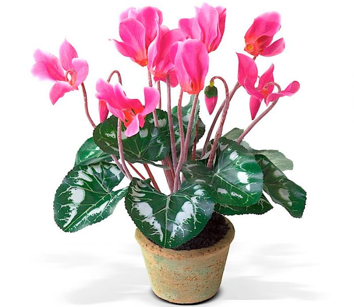

Про цветочки и не только!
Телефон: 89169996768
Почта: nimi9992@mail.ru

Всё, что вы хотели знать,
но боялись спросить,
про домашние растения!
но боялись спросить,
про домашние растения!
Про цветочки и не только!
Телефон: 89169996768
Почта: nimi9992@mail.ru
Цикламен
Описание
Растение состоит из подземного толстого клубня, короткого подземного стебля и надземных, сердцевидных, яйцевидных или почковидных листьев, растущих от основания. Цветки одиночные, посажены на длинные (около 30 см) цветоножки, скручивающиеся спирально после цветения. Цветок правильный, с колокольчатою, пятираздельною чашечкою и пятираздельным венчиком, белым, розовым или пурпурным; доли венчика отогнуты назад; тычинок 5, не выдающихся из трубочки венчика; нити у них широкие, короткие, прикрепленные к основанию трубочки венчика. Пестик один. Плод шарообразная коробочка, многосеменная, вскрывающаяся створками.
Особенности
Цикламен достаточно неприхотлив, предпочитает прохладу до +15°С и не любят прямое солнечное освещение. При повышении температуры до 25 градусов может впасть в спячку. Цветение продлится дольше, если найти самое прохладное и светлое место. Для выращивания подойдут окна восточной и западной ориентации. Альпийская фиалка не любит сырости, но во время цветения требует стабильного умеренного полива. После бурного цветения наступает период покоя, в это время следует исключить все подкормки и снизить полив. При посадке следует выбирать горшки на 2 см шире корневой системы, в крупной посуде цветение будет скудным.